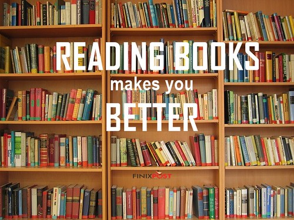

How To Quarantine
Everything You Need to Know About BAND
Quarantine Book Bucket List
Q.B.B.L. (Quarantine Book Bucket List)
Credits to Caitlin for her suggestions

"book quote about reading books" by manpreetkaur93 is licensed under CC BY 2.0
Quarantine has come with many challenges (most not even being directly related to the pandemic itself). But one of the few good things about our new found way of life is the excess amount of free time everyone has found themselves with. Though some people haven't found anything to fill their time, many have turned to the imaginary worlds we discover between the pages of a good book. Here's a few favorites in a variety of genres:
Teen, Fantasy, & Sci-Fi
- THE Mortal Instruments series by Cassandra Clare
- The Infernal Devices series by Cassandra Clare
- Divergent, Insurgent, and Allegiant by Veronica Roth
- Throne of Glass series by Sarah J Maas
- Crescent City by Sarah J Maas
- A Court series by Sarah J Maas
- The Hunger Games by Suzanne Collins
- Percy Jackson by Rick Roirdan
- Harry Potter by J.K. Rowling
Adult Fiction
- The Handmaid's Tale by Margaret Atwood
- The Testaments by Margaret Atwood
- Outlander by Diana Gabaldon
- Game of Thrones by George R.R. Martin
Classics
- To Kill a Mockingbird by Harper Lee
- 1984 by George Orwell
- A Tale of Two Cities by Charles Dickens
- Wurthering Heights by Emily Bronte
- Pride and Prejudice by Jane Austen
- Jane Eyre by Charlotte Bronte
- Frankenstein by Mary Shelley
- Odyssey by Homer
- Oliver Twist by Charles Dickens
- Catch-22 by Joseph Heller
- Gone With the Wind by Margaret Mitchell
- Farenheit 451 by Ray Bradbruy
Screenplays
- Macbeth by William Shakespere
- Hamlet by William Shakespere
- Romeo and Juliet by William Shakespere
- Death of a Salesman by Arthur Miller
- Midsummer Nights Dream By William Shakespere
- Julius Caesar by William Shakespere
- 12th Night by William Shakespere
- Taming of the Shrew by William Shakespere
- Love's Labor's Lost by William Shakespere
- A Comedy of Errors by Willaima Shakespere
- Merchant of Venise by William Shakespere
- Cyrano de Bergerac by Edmond Rostand
Classic Children's
- Nancy Drew by Carolyn Keene
- Little House on the Praire by Laura Ingalls Wilder
- Box Car Children by Gertrude Chandler Warneer
- The Adventures of Huckleberry Fin by Mark Twain
- Anne of Green Gables by L.M. Montgomery
- Chronicles of Narnia by C.S. Lewis
- Ferdinand by Munro Leaf
- Alice's Adventures in Wonderland by Lewis Carol

This work is licensed under a Creative Commons Attribution-NonCommercial-ShareAlike 4.0 International License.